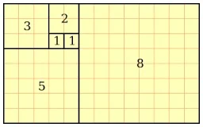
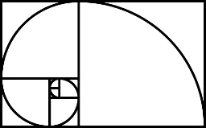

Sequencia de Fibonacci
Sequência de Fibonacci é a sequência numérica proposta pelo matemático Leonardo Pisa, mais conhecido como Fibonacci:
1, 1, 2, 3, 5, 8, 13, 21, 34, 55, 89, ...
Foi a partir de um problema criado por ele que o mesmo detectou a existência de uma regularidade matemática.
Trata-se do exemplo clássico dos coelhos, em que Fibonacci descreve o crescimento de uma população desses animais.
A sequência é definida mediante a seguinte fórmula:
Fn = Fn - 1 + Fn - 2
Assim, começando pelo 1, essa sequência é formada somando cada numeral com o numeral que o antecede. No caso do 1, repete-se esse numeral e soma-se, ou seja, 1 + 1 = 2.
De seguida soma-se o resultado com o numeral que o antecede, ou seja, 2 + 1 = 3 e assim sucessivamente, numa sequência infinita:
3 + 2 = 5
5 + 3 = 8
8 + 5 = 13
13 + 8 = 21
21 + 13 = 34
34 + 21 = 55
55 + 34 = 89
Retângulo de Ouro
A partir dessa sequência, pode ser construído um retângulo, que é chamado de Retângulo de Ouro.
Ao desenhar um arco dentro desse retângulo, obtemos, por sua vez, a Espiral de Fibonacci.
A verdade é que a sequência de Fibonacci pode ser percebida na natureza. São exemplos disso as folhas das árvores, as pétalas das rosas, os frutos como o abacaxi, as conchas espiraladas dos caracóis ou as galáxias.
Muito interessante é o fato de que através do coeficiente de um número com o seu antecessor, obtém-se a constante com o valor aproximado de 1,618.
Ela é aplicada em análises financeiras e na informática e foi utilizada por Da Vinci, que chamou a sequência de Divina Proporção, para fazer desenhos perfeitos.
Leonardo Pisa (1175-1240) deu essa sequência a conhecer no seu livro Liber Abaci (Livro do Ábaco, em português), o qual data de 1202. Apesar disso, os indianos já haviam descrito essa sequência.